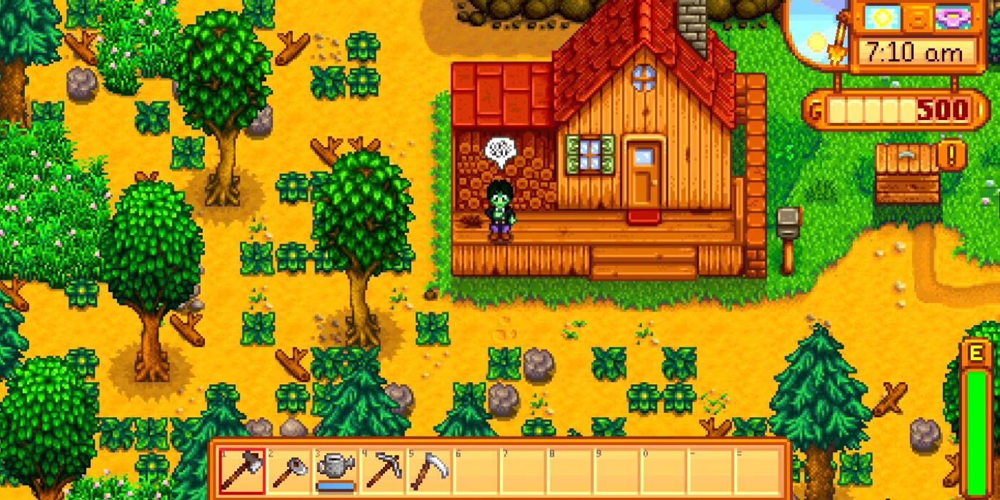

Seu avô deixou uma fazenda em uma cidadezinha chamada Vila Pelicanos para você cuidar quando se cansasse da vida moderna. Chegando à cidade, você conhece personagens carismáticos e se depara com uma fazenda um tanto quanto abandonada... O que significa que há muito trabalho pela frente! A premissa do jogo pode ser simples, mas tenha certeza de que uma incrível experiência te aguarda nesse maravilhoso mundo de Stardew Valley.

Fazenda logo no início do jogo